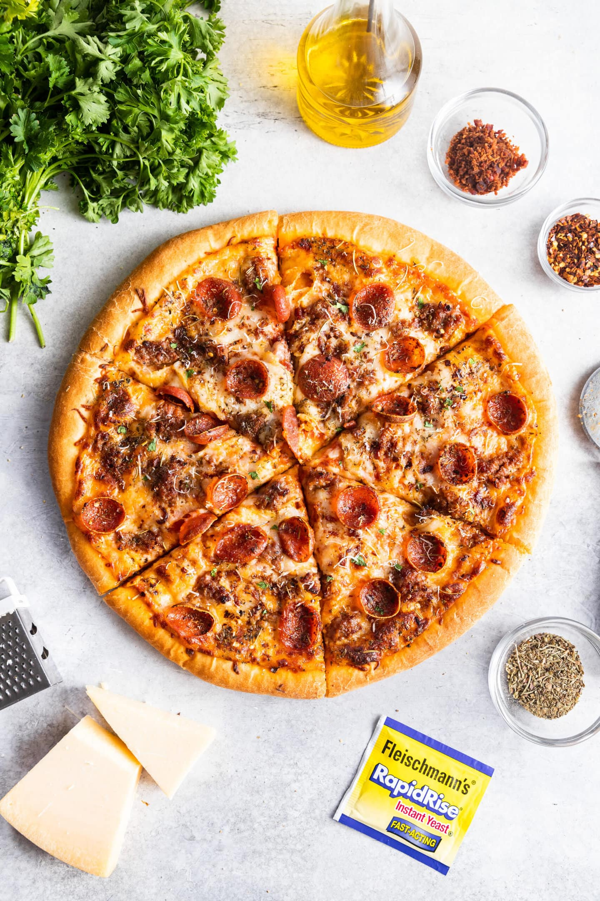

Home Page
Meat Lover's Pizza

This pizza contains a variety of meats with an excellent buttered crust
To prepare this pizza we will combine a variety of meats which
includes pepperoni, sausage, ground beef, and fajita.
Ingredients
- 1 lb pizza dough, homemade or store bought
- 1/2 cup pizza sauce
- 8 oz mozzarella cheese, fresly shredded
- 4 oz parmasan freshly shredded
- 8 pepperoni slices
- 2 bacon slices cooked and crumbled
- 2 canadian bacon slices cut into smaller pieces
- 1/4 lb spicy or mild italian sausage cooked and crumbled
- 2 tsp italian seasoning
- 1 tsp red pepper chili flakes optional
Steps for Recipe
- Set the oven rack to the lower position. Preheat the oven to 500 degrees
- Allow the prepared pizza dough to sit out at room temperature for 30
minutes. This step is only required if you're working with a refrigerated dough.
- Prepare the toppings: fry the bacon, cook the sausage, shred the cheese using a
GoodCook Grater, and measure out the rest.
- Shape the Dough - On a lightly floured surface, stretch and shape the dough
into a 10-inch circle - transfer to the baking sheet. Use fingers to press into a 12-inch
circle. Leave the edges slightly thicker, about 1/2-inch tall and wide.
- Brush olive oil on the edges to make the crust crispier when baked.
- Spread the pizza sauce over the dough, followed by the mozzarella cheese,
parmasean cheese, pepperoni, bacon, canadian bacon, and sausage.
Sprinke on italian seasoning and red pepper flakes (if desired).
- Cook until the crust is golden brown and the cheese is melted and bubbly, about 10
to 13 minutes.
- Immediately slice and serve while still hot.
Home Page